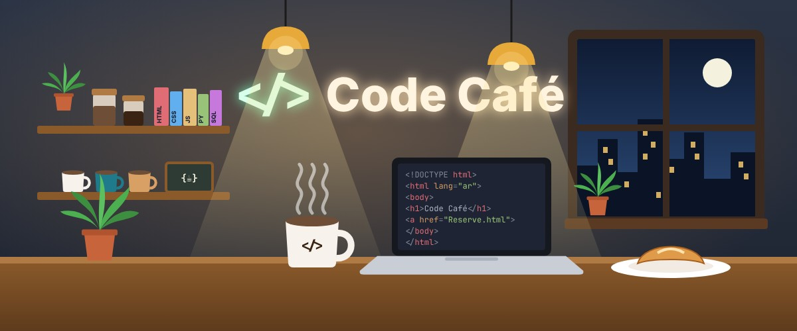
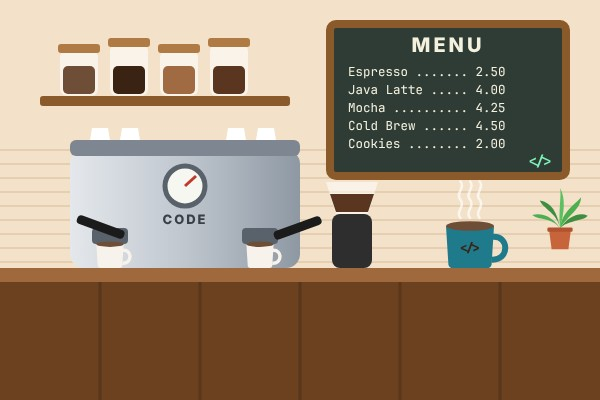
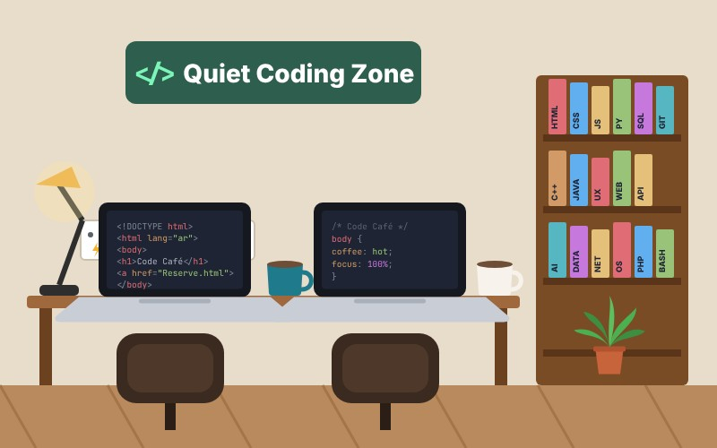
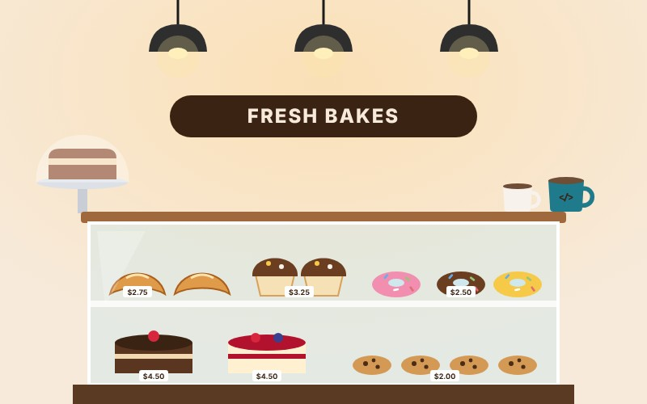
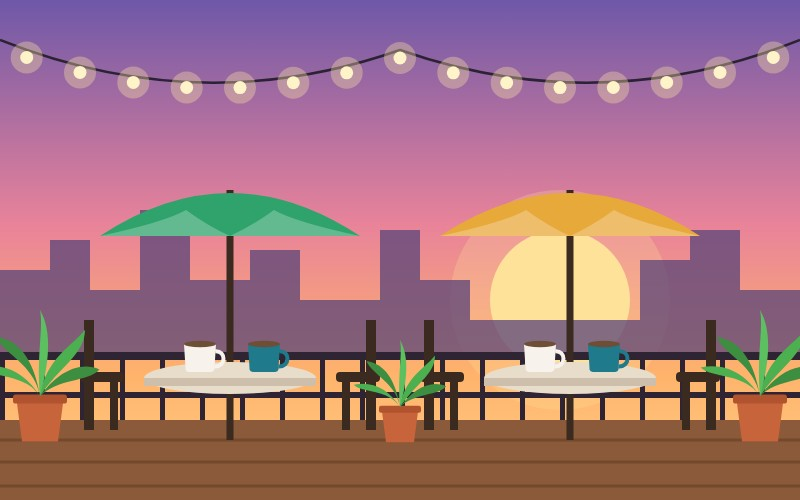
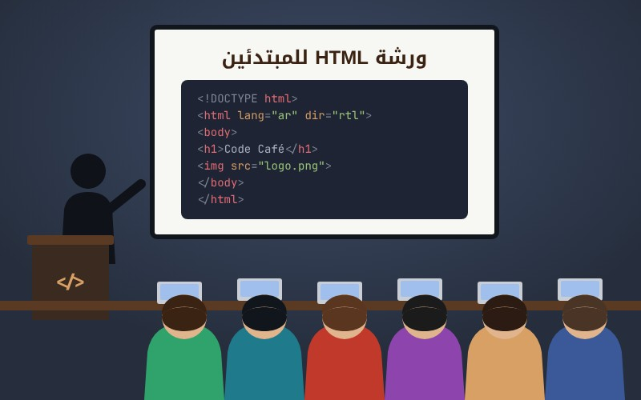

أهلًا وسهلًا بك في Code Café

سواء كنت طالبًا تستعد لاختبار، أو مبرمجًا يعمل على مشروعه، أو تبحث فقط عن فنجان قهوة لذيذ، ستجد في Code Café مكانًا مريحًا وهادئًا يساعدك على التركيز والإبداع.
من نحن؟

Code Café مقهى عصري افتتح أبوابه عام 2024، وفكرته بسيطة: أن يجد طلاب الجامعات والمبرمجون والمصممون مكانًا واحدًا يجمع بين القهوة المميزة وبيئة مناسبة للدراسة والعمل على المشاريع.
اخترنا الاسم Code Café لأننا نؤمن أن أفضل الأفكار البرمجية تولد مع فنجان قهوة، لذلك صممنا المقهى بكل ما يحتاجه المبرمج: هدوء، وإنترنت سريع، ومقاعد مريحة.
ما الذي يميزنا؟
- قهوة مختصة: حبوب بن محمّصة محليًا وتُحضَّر بعناية.
- إنترنت سريع ومجاني: لجميع زوار المقهى.
- مقابس كهرباء: بجانب كل طاولة لشحن الحاسوب والهاتف.
- ركن البرمجة الهادئ: مخصص للدراسة والعمل بتركيز.
- ورش عمل أسبوعية: لتعليم أساسيات البرمجة للمبتدئين.
أجواء المقهى
جولة مصوّرة في أركان Code Café المختلفة:




🎬 جولة قصيرة داخل المقهى
🎵 استمع إلى موسيقى المقهى
أسئلة شائعة
هل الإنترنت مجاني؟
نعم، الإنترنت مجاني لجميع الزوار، وتجد كلمة المرور مطبوعة على الفاتورة.
هل يجب أن أحجز طاولة مسبقًا؟
الحجز غير إلزامي، لكنه يضمن لك مكانًا في أوقات الازدحام وخاصة في المساء.
متى تقام ورش البرمجة؟
كل يوم خميس من الساعة 6:00 حتى 8:00 مساءً، والمشاركة مجانية لزوار المقهى.
تواصل معنا
العنوان: شارع المبرمجين، مبنى رقم 10، الطابق الأرضي.الهاتف: 0123456789
البريد الإلكتروني: info@codecafe.example
ساعات العمل
| اليوم | من | إلى |
|---|---|---|
| السبت - الأربعاء | 8:00 صباحًا | 11:00 مساءً |
| الخميس | 8:00 صباحًا | 12:00 منتصف الليل |
| الجمعة | 2:00 ظهرًا | 12:00 منتصف الليل |
كيف تحجز طاولة؟
- اضغط على رابط احجز طاولة.
- املأ نموذج الحجز ببياناتك.
- اضغط زر إرسال الحجز لتظهر لك صفحة التأكيد.